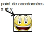

D'après Wikipédia :
Sprite est un mot anglais possédant plusieurs significations. Il est notamment employé dans les domaines de l'infographie et du jeu vidéo, où sprite désigne une image en deux dimensions qui peut être déplacée par rapport au fond de l'écran.
Commençons simple, affichons un sprite :
Saisissez le code suivant dans le fichier script.js et testez cet exemple
var game = new Phaser.Game(800,600,Phaser.AUTO,'content',{preload: preload, create: create,update:update});
function preload(){
game.load.image('smiley','asset/smiley.png');
}
function create(){
monSprite=game.add.sprite(0,0,'smiley');
}
function update(){
}
Analysons l'exemple du "À faire vous même 2.1"
Nous avons uniquement ajouté 2 lignes :
game.load.image('smiley','asset/smiley.png');
Nous commençons par charger une image que nous nommons "smiley", cette image doit se trouver dans le dossier "asset" et se nomme "smiley.png". Comme vous pouvez le constater, cette ligne se trouve bien dans la fonction "preload" ce qui nous assure que la suite du programme ne sera pas exécutée avant que l'image soit complètement chargée.
monSprite=game.add.sprite(0,0,'smiley');
Nous créons un objet de type sprite à l'aide de la méthode "game.add.sprite". Cette méthode prend 3 paramètres : la coordonnée x du sprite, la coordonnée y du spirite (vous devez savoir que l'origine du repère se trouve en haut et à gauche de la fenêtre de jeu) et le nom de l'image utilisée (ici "smiley").
Cet objet sprite est "rangé" dans la variable "monSprite".
Modifier les valeurs des paramètres "coordonnée x du sprite et "coordonnée y du sprite" afin de placer l'image au centre de la fenêtre de jeu.
Vous avez peut-être remarqué que si vous choisissez 400 pour la coordonnée x et 300 pour la coordonnée y, le sprite n'est pas au centre de l'écran alors qu'il devrait l'être.
Pourquoi ?
Par défaut "coordonnée x du sprite" et "coordonnée y du sprite" sont les coordonnées du coin "haut-gauche" du sprite.
Pour que ce soit le centre du sprite qui soit pris en compte et non plus le coin "haut-gauche", il suffit d'ajouter la ligne suivante :
monSprite.anchor.setTo (0.5,0.5) ;
Modifier le code précédent pour que le sprite s'affiche au centre de l'écran.
Il est possible de modifier les coordonnées du sprite après sa création. Si le sprite est créé aux coordonnées (0,0) ("monSprite=game.add.sprite(0,0,'smiley');"), vous pouvez, par la suite, modifier sa position comme bon vous semble, par exemple vous placerez le sprite "monSprite" aux coordonnées (200,150), simplement en écrivant :
monSprite.x=200;
monSprite.y=150;
N.B. Nous utilisons les attributs x et y de l'objet "monSprite".
Modifier le code précédent afin de créer un sprite aux coordonnées (0,0). Une fois ce sprit créé, il vous faudra le déplacer aux coordonnées (200,150).
Nous venons de voir 2 attributs d'un objet de type sprite (x et y). Il existe un autre attribut extrêmement intéressant, l'attribut angle.
Comme vous vous en doutez sans doute, cet attribut angle nous permettra de faire faire à notre sprite des rotations :
monSprite.angle=45
fera tourner le sprite de 45°.
Mais une question doit tout de suite vous venir à l'esprit : Où se trouve l'axe de rotation ?
La réponse est simple : par défaut, dans le coin "haut-gauche" du sprite.
Si vous désirez avoir l'axe de rotation au centre du sprite (faire faire au sprite des rotations sur lui même), il vous faudra, ici aussi, ajouter la ligne :
monSprite.anchor.setTo(0.5,0.5);
Inutile de l'ajouter 2 fois, une seule fois suffit.
Écrire un programme permettant d'afficher un sprite. Faites faire à ce sprite une rotation de 45°, dans un premier temps avec l'axe de rotation placé dans le coin "haut-gauche" du sprite, puis dans un deuxième temps avec l'axe de rotation placé au centre du sprite.
Modifier le code que vous venez d'écrire pour que le sprite ait des coordonnées et un angle de rotation aléatoires (le sprite devra "rester" dans la fenêtre de jeu et l'angle de rotation devra être compris entre 0 et 90 degrés).
Pour vous aider :
La méthode
Math.random()
renvoie un nombre aléatoire compris entre 0 et 1 (comment obtenir un nombre aléatoire compris entre 0 et 800 ?).
La méthode
Math.floor()
retourne le plus grand entier inférieur ou égal à la valeur donnée en paramètre.
Par exemple,
Math.floor(2.9);
renvoie 2.
J'ajoute que les coordonnées et l'angle doivent être des entiers.